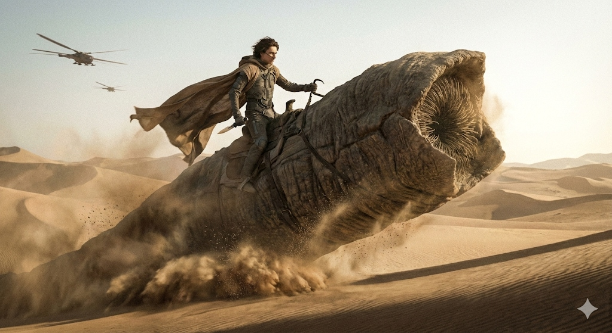

Welcome
Press "Start" to begin Solo Mode.
Mahdi Mode Differences
In Solo Mode, you control the Atreides and the system (bot) controls the Harkonnens.
1. Setup & Components
- Tactics Deck: Exclusive 8-card deck defining behavior per round (Harvest/Target Sietch).
- Harkonnen Reinforcements Deck: Created at start of round (1 House card + 1 Ally card). Boosts combat.
- Face-down Tokens: Your Deployment and Sietch tokens are face-down for the game, but you may look at them. Revealing them voluntarily adds cards to the enemy.
2. Round Structure
- Prescience: Draw 2 cards (instead of 3).
- Auto Supremacy: +1 Supremacy for free at the end of each round.
- Target Sietch: A priority objective defined by the Tactics card.
3. Vehicle Phase (Harkonnen)
- Auto Placement: Harvesters by Harvest Sector priority (prioritizes Deep Desert).
- Ornithopters: Connect Legions with objectives. No Scouting.
4. Action Resolution
- Alternating Turns: Harkonnen rolls and resolves 1 die after each of your turns.
- Priority: 1st Leader Special Action, 2nd Priority Tables.
- Bene Gesserit Tokens: Exchanged for 1 extra die (or +1 Supremacy if no dice).
- Rule of Choice: When in doubt, YOU choose the worst option for the Harkonnen.
5. Harkonnen Movement
- Fixed Objective: Towards Target Sietch.
- Borders: Ignores impassable borders.
- Auto Defense: When leaving a Settlement, they leave 2 Deployment tokens.
6. Combat
- Max Power: Discards cards to always roll 6 dice if able.
- No Retreat: They never retreat.
- Cease Attack: Only if their CP <= half of yours.
- Continue: Does not take automatic damage for continuing against a Sietch.
7. Changes in Cards & Leaders
- Thufir Hawat / Mohiam: Play cards immediately.
- Truth Trance: Forces a specific die result.
- Ornithopters: Strict restriction on revealing tokens (not if connected ornithopter).